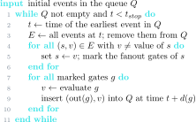
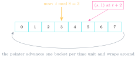

Method
Types of simulation: compiled (evaluate every gate every cycle) or event-driven (evaluate only on change); zero-delay, unit-delay or real-delay. Only a small fraction of the circuit is active at any time, which event-driven simulation exploits.
Algorithm

Complexity
With  gates, simulated time and activity proportional to per time unit, about events are processed. The cost of each queue insertion decides the total:
gates, simulated time and activity proportional to per time unit, about events are processed. The cost of each queue insertion decides the total:
- sorted linked list: insertion
 (scan for the position): total ;
(scan for the position): total ; - balanced tree (heap): : total ;
- timing wheel: a circular array of buckets, one per time unit up to the maximum delay; inserting at is indexing bucket :
 , total . Events beyond the wheel go to an overflow list.
, total . Events beyond the wheel go to an overflow list.
Picture

A timing wheel: the pointer advances one bucket per time unit; an event with delay 2 goes two buckets ahead.
Intuition
Simulate only what changes. Most of a circuit is quiet most of the time, so following the events is far cheaper than recomputing everything.
Pitfall
Event-driven simulation with real delays shows glitches that zero-delay functional simulation hides — and conversely a zero-delay simulation that passes says nothing about timing.